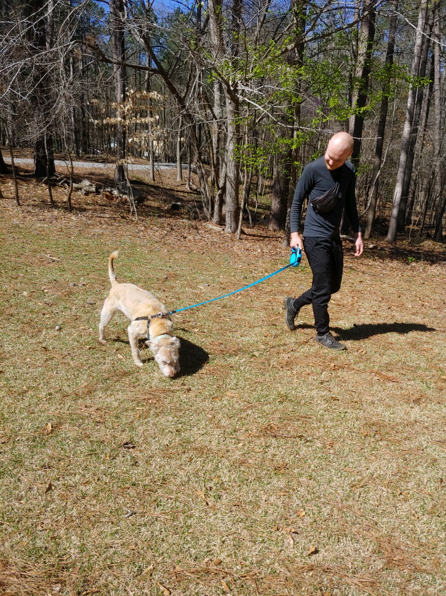
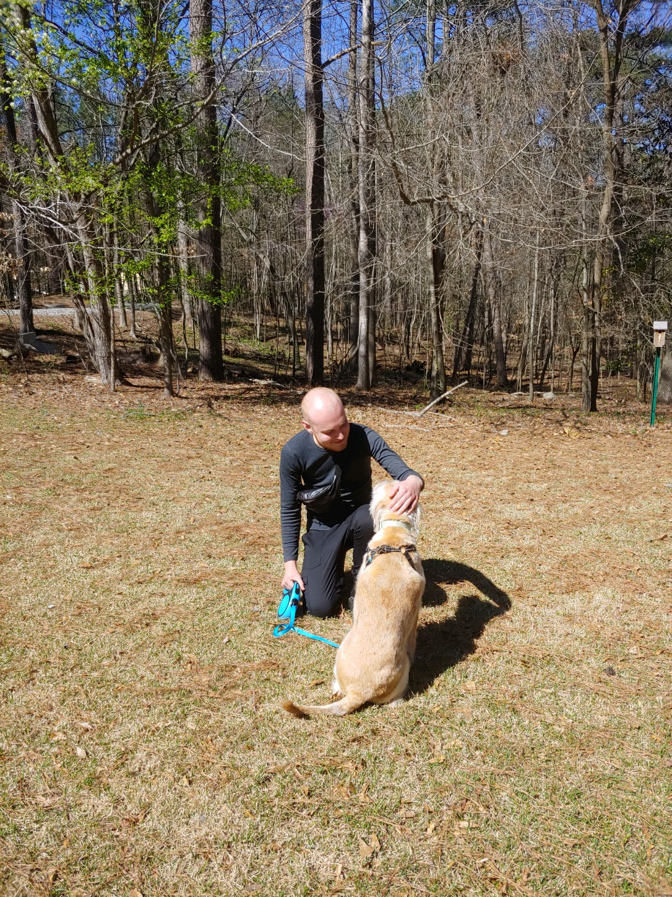

Pet Care Services

Dog Walks
I prioritize walks in natural, social areas where dogs can interact with the environment and meet other dogs

Parks
My favorite places to walk dogs are Keswick Park and Forest, the Georgia Path, Blackpurn Park, and Murphy Candler Lake!

Home Care
I socialize, feed, provide medicine and water to dogs and cats during working hours